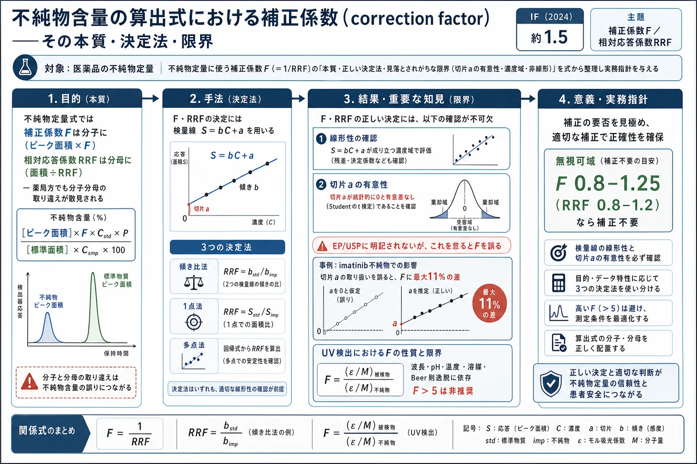
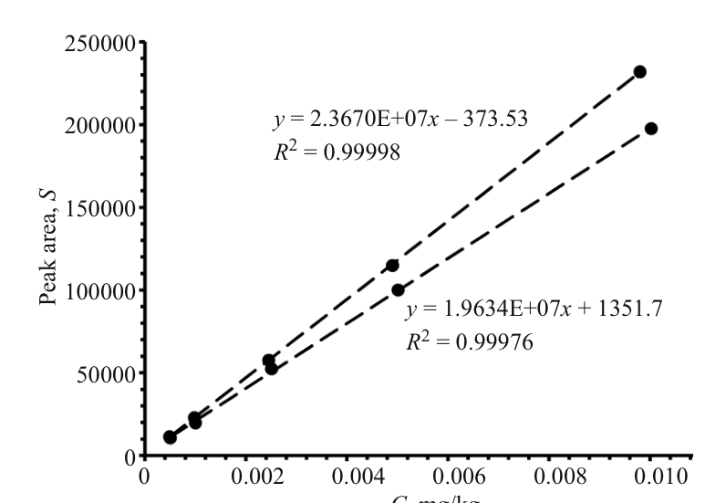

不純物含量の算出式における補正係数（correction factor）——その本質・決定法・限界

<!-- 方針: ほぼ全訳＋必要に応じた補足。原文構成に沿って訳出。式・数値を保持。本文の[N]は原文の番号引用に対応し末尾の参考文献にリンクする。図はPyMuPDFで原本から抽出。「> 補足:」は訳者注。 -->
書誌情報
- 原題: Correction Factors in Formulas for Calculating Impurity Contents: Essence and Determination Methods and Their Limitations
- 著者: N. A. Épshtein（医薬品登録・開発センター LLC IRVIN 2, モスクワ, ロシア）
- 掲載: Pharmaceutical Chemistry Journal, Vol. 53, No. 5, August 2019（露語原著 Khimiko-Farmatsevticheskii Zhurnal Vol. 53, No. 5, pp. 55–60, May 2019）. https://doi.org/10.1007/s11094-019-02023-x
- インパクトファクター: 約1.5（Pharm. Chem. J., JCR 2024 / Clarivate。年により1.2〜1.6と幅があり要確認）
- 受理経過: 原著投稿 2018-07-30
補足: RRF（relative response factor, 相対応答係数） ＝不純物と本体（被検物質）の検出器応答係数の比。補正係数 F（correction factor, CF） ＝その逆数 F = 1/RRF。不純物のピーク面積を「本体だったら示すはずの面積」に換算するための係数。本論文は、この F・RRF が式のどこ（分子か分母か）に入るべきか、どう正しく決めるか、そして欧米薬局方（EP/USP）が明記しない「使ってよい条件（限界）」は何かを、式に立ち返って整理した実務向けの理論解説。b（response factor, 応答係数） ＝検量線 S=bC の傾き（単位濃度あたり応答）。
要旨（Abstract）
不純物の相対応答係数（RRF）と補正係数（F）を算出する式、およびRRF・Fの本質を理解するために必要な式を提示する。Fの主要な決定法とその限界（RRF・Fを正しく決定するために必要な条件）を検討する。これらの限界は欧州・米国薬局方には現れないが、正しいFを決定するには考慮しなければならない。Fの信頼できる決定と正しい使用のための例と推奨を与える。
キーワード: 補正係数、応答係数、相対応答係数、不純物、推奨。
序論と本質
不純物含量の決定は、原薬・製剤の品質管理における主要課題の一つである。算出には、同定された不純物のピーク面積に特別な補正係数（通常 F（CF）または RRF と表記）を乗じる／除する式が通常用いられる。これらの係数を正しく決定する問題は、クロマトグラフ法で長く使われてきたにもかかわらず、依然として決定的に重要である。しかも F（CF）と RRF は式中で取り違えられることがある。すなわち、分母に入れるべきを分子に、あるいはその逆に配置される。RRF が異なる各条の不純物含量決定式で、時に分子に、時に分母に現れることを示す表を含む刊行物は、これが（USP においてさえ）孤立した事例ではないことを裏づけた[1]。
本稿の目的は、(i) RRF と F（CF）の本質を理解するために必要な式を検討し、(ii) F の主要な決定法とその限界——正しい RRF・F を決定するために満たすべき条件——を論じ、(iii) 例と推奨を与えることである。
化合物のピーク面積 S とその濃度 C の関係は、狭い濃度範囲では線形回帰式に従うことが知られている[2]:
$$S = bC + a \tag{1}$$
係数 b（物質固有の応答係数[3]）は化合物の性質で決まり、化合物ごとに大きく異なりうる。これを考慮し、線形関数の定数 a を無視すると、不純物と被検物質の b は式(1)から次のように表せる（下付き i は不純物、0 は被検物質）:
$$b_i = S_i/C_i \quad (a \approx 0) \tag{2}$$
$$b_0 = S_0/C_0 \quad (a \approx 0) \tag{3}$$
不純物 i と被検物質の検出器応答係数の比 b_i/b_0 を RRF_i と表記し、式(2)を式(3)で割ると:
$$\mathrm{RRF}_i = \dfrac{b_i}{b_0} = \dfrac{S_i/C_i}{S_0/C_0} \tag{4}$$
これは、ピーク面積 S を A に、下付き 0 を s に置き換えれば、欧州ガイドの類似式[4]に至る:
$$\mathrm{RRF} = \dfrac{A_i/C_i}{A_s/C_s} \tag{5}$$
ここで RRF（≡ RRF_i）は不純物 i の相対検出器応答係数。欧州薬局方では RRF は通常「応答係数（response factor）」と呼ばれる[5]。しかし著者の見解では、これはやや不適切な名称である。response factor は検出器応答係数 b = S/C の一般名だからである[6]。したがって、USP と同様に RRF（relative response factor の略）という名称の方が良い[7]。また、不純物含量算出式では RRF の代わりに、その逆数 F = 1/RRF（補正係数, CF） が通常用いられることも注目に値する[5]。
後述するとおり、式(4)は RRF・F を決定する各種方法の基礎である。これは、ピーク面積 S が濃度 C に線形依存する[式(1)]こと、定数 a が 0 と有意に異ならない[式(2)・(3)]ことを仮定して導かれた。この2つの重要な仮定（限界）は、正しい RRF・F を決定するために考慮しなければならない。
RRF・F を不純物濃度／含量の決定式のどこに置くべきかを明確に示すため、式(4)から不純物濃度を表すと:
$$C_i = \dfrac{S_i}{\mathrm{RRF}_i}\cdot\dfrac{C_0}{S_0} \tag{6}$$
または
$$C_i = S_i F_i \cdot \dfrac{C_0}{S_0} \tag{7}$$
式(7)・(6)から、実務上重要な結論が得られる。すなわち 不純物濃度・含量の決定式で、F は常に分子に置く（不純物ピーク面積に F を乗じるため）。一方 RRF は分母に置く（不純物ピーク面積を RRF で除するため）。
RRF・F の本質と、それらに影響しうる要因を、UV 検出器を例に検討する。式(6)・(7)で C_0 = C_i とすると S_i/RRF_i = S_0 および S_i F_i = S_0 となる。したがって、F または RRF による不純物ピーク面積の補正とは、不純物ピーク面積を「本体（被検物質）が当該不純物と同じ濃度であれば示すはずの値」に調整することを意味する。
Bouguer–Lambert–Beer（Beer則）が成り立つ濃度範囲での RRF は次のように書ける[8]:
$$\mathrm{RRF} = \dfrac{\varepsilon_i/M_i}{\varepsilon_0/M_0} \tag{8}$$
または
$$F = \dfrac{\varepsilon_0/M_0}{\varepsilon_i/M_i} \tag{9}$$
ここで M_i・M_0 は分子量、ε_i・ε_0 は不純物 i・被検物質のモル吸光係数。すなわち UV 検出器の F は、被検物質と不純物の「正規化（分子量で除した）モル吸光係数」の比に等しい。
式(8)・(9)は、UV 検出器を使う場合、RRF・F がモル吸光係数 ε と同じ要因——波長 λ、pH（イオン化する分子の場合）、温度、溶媒[9]——に影響されうることを示す。加えて、被検物質・不純物が Beer則に従わない場合、RRF・F は検討濃度範囲内で変動しうる。
上記要因が不純物 RRF に及ぼす影響の例が報告されている[10]。グラジエントHPLC法での imatinib 不純物 RRF の最大変化は、5℃の温度変化で8.4%、移動相流速20%変化で3.6%（グラジエントで流速を変えるのは強溶離液の含量を変えるのに等しい[6]）、緩衝液pH 0.2変化で3.2%であった。一方、緩衝液濃度10%変化・UV検出器のPDA置換・検出波長の±3 nm程度のわずかな変化では、imatinib 不純物 RRF はほとんど影響を受けなかった。
補正係数の決定法
一般情報
欧州ガイド[4]によれば、算出には「直線範囲全体にわたる面積比の平均、または各直線回帰式の傾きの比を用いてよい」。すなわち直線範囲全体にわたる S_i/S_0 または b_i/b_0 の平均を式(4)に用いて不純物 RRF を算出できる。測定は所与の波長・流速で行うべきである。F が 0.8–1.25 の範囲（RRF が 1.2–0.8 の範囲）にあれば、不純物含量決定式で F を考慮する必要はない。値が5を超える補正係数の使用は推奨されない。F > 5 で通常生じる不純物検出やピーク面積再現の問題がその理由である。そのような場合は、内部標準法と、被検物質含量既知の不純物試料を用いて不純物含量を決定すべきである。
不純物・被検物質の溶液濃度範囲の正しい選択は、ピーク面積・RRF・F の決定に重要である。ガイド[4]によれば「不純物濃度と被検物質濃度は同じオーダーであるべきで、測定は不純物の判定基準に対応する濃度付近の複数点で決定した検量線を用いて行うべき」である。不純物・被検物質のピーク面積は、相対標準偏差（RSD）≤ 5.0% の要件を満たす精度で決定しなければならない[11]。
クロマトグラフ法での F の主要な決定法は、上記の式(4)に基づく。
検量線の傾き比による決定
この方法は、単純さと高価な不純物の経済的使用のため最もよく用いられる。式(4)の左辺、すなわち比 b_i/b_0 の決定に基づく。被検物質と不純物の標準品（RS）のストック溶液を調製し、被検物質の定量下限（LOQ）の2倍または不純物無視限界[11]（通常0.05%）から、不純物判定基準[12]の少なくとも1.2倍まで（不純物決定法の試験溶液濃度に対して）の範囲をカバーする、少なくとも5溶液となるよう希釈する。各水準で被検物質・不純物の濃度は同程度にすべきである。不純物判定基準の上下に各2〜3濃度と、判定基準に対応する濃度を用いる[10]。得た溶液をクロマトグラフィーにかけ、被検物質・不純物のピーク面積を決定。面積対濃度の回帰式を S=bC+a（検量線）として算出。次に式(4)左辺に従い RRF_i・F_i を決定:
$$\mathrm{RRF}_i = b_i/b_0 = \dfrac{\text{不純物 } i \text{ の検量線の傾き}}{\text{被検物質の検量線の傾き}} \tag{10}$$
$$F_i = 1/\mathrm{RRF}_i = b_0/b_i = \dfrac{\text{被検物質の検量線の傾き}}{\text{不純物 } i \text{ の検量線の傾き}} \tag{11}$$
被検物質のLOQを不純物Fの下限濃度とすることがあるが、分析法バリデーションの権威あるガイド[2]はRRFの節でこれを推奨していない[2]。
検量線の傾き比からのRRF・F決定には重要な限界がある。正しいRRF・Fを決定するには次を確認すべきである:
- RRF・F決定に用いる濃度範囲で、被検物質・不純物のSがCに線形依存すること（注1）。
- SのC回帰関数における定数aが無意味であること[式(2)・(3)の要件]。これにはStudentのt検定を使える。定数aは次の場合に統計的に無意味（a≈0）である[13]:
$$t_a = \dfrac{|a|}{SD_a} < t(P,\ f=n-2) \tag{12}$$
ここで t_a は算出Student基準、|a| はピーク面積–濃度の線形関数の定数の絶対値、SD_a は a の標準偏差、t(P, f=n−2) は信頼確率 p=95% でのStudent基準の表値、f は自由度、n は回帰直線上の実験点数。
例: 薬物と不純物の秤量部分（±0.05 mg精度）からストック溶液を調製し、不純物決定の試験溶液濃度に対し1.0・0.5・0.25・0.1・0.05%に希釈。クロマトグラフィー後、薬物・不純物のピーク面積を決定し、濃度の関数としてExcelでプロット（図1）。トレンド線で回帰係数を求め、LINEST関数で精緻化、SD_aも決定。式(12)で実験Student基準を算出し、回帰直線定数の無意味性を評価。回帰式は線形性基準を満たし、次の特性を示した:
- 不純物: S = 2.3670×10⁷·C − 373.53; R² = 0.99998; SD_a = 311.03; t_a = |a|/SD_a = 373.53/311.03 = 1.20
- 薬物: S = 1.9634×10⁷·C + 1351.7; R² = 0.99976; SD_a = 901.34; t_a = 1351.7/901.34 = 1.50
得た t_a 値がStudent基準表値（95%, f=3）= 3.18 より小さかったため、式(10)・(11)でRRF・Fを算出できた:
- RRF = (不純物直線の傾き)/(被検物質直線の傾き) = 2.367×10⁷/1.9634×10⁷ = 1.21
- F = 1/RRF = 1/1.21 = 0.85

補足（注1）: SのC線形依存は、相関係数の監視（被検物質 R≥0.999・不純物 R≥0.98）とS対Cグラフの目視で確認することが多い。より正確な線形性確認には、ICH推奨[14]に従い残差プロット（least-squares graph）を使うべきである。これは各濃度で実験ピーク面積と回帰式からの計算値の差（ΔS）を求め、ΔSのC依存をプロットするもので、線形回帰なら点が非線形傾向を示さないべきである[2]。ExcelではData→Analyze data→regression→Least-squares graphで容易に得られる。
式（1点法・多点法）による補正係数の算出
不純物 i の補正係数 F_i は式(4)から次のように書ける:
$$F_i = \dfrac{b_0}{b_i} = \dfrac{S_0/C_0}{S_i/C_i} \tag{13}$$
1点法（one-level approach）: 不純物判定基準に対応する不純物・被検物質溶液濃度でF_iを決定する。被検物質・不純物それぞれ別々の秤量部分から少なくとも2溶液を調製し、不純物決定法で複数回クロマトグラフィー。各溶液の係数bを次式で決定:
$$b = S/C \tag{14}$$
被検物質のb_0・不純物のb_iの平均を算出し、式(13)に入れてF_iを決定:
$$F_i = b_0/b_i \tag{15}$$
被検物質RSに当該不純物がない、または含量が判定基準に比べ無視できるほど小さい場合、被検物質RSに不純物の秤量部分を混ぜた溶液を調製できる。これにより実験量が減り、各溶液のクロマトグラムから被検物質S_0と不純物S_iのピーク面積比、次いで平均S_0/S_iを素早く算出し式(13)右辺に代入してF_iを決定できる。不純物iの各溶液のF_iの平均をそのFとする。1点法でF_iを決定する前に、不純物・被検物質でピーク面積の濃度線形依存（S=bC+a）と定数aのゼロからの統計的無意味性を確認すべきである。一方、多点法では、aの無意味性が「検討濃度範囲でのF_iの安定性または小さく許容される変化」として現れるため、SのC線形性のみ確認すればよい。
多点法（multi-level approach）: 検量線の傾き比と同じ水準・同じ濃度範囲で補正係数を決定する。したがってF_iは各濃度水準（通常少なくとも5点、1点法と同様）で決定する。通常、各水準で被検物質・不純物のRS溶液を1〜2用いる。前節の条件下では、被検物質に秤量不純物を混ぜた溶液を使える。全水準のF_iの平均をFとする[4]。
上記3法の比較には文献結果[15]を使える。clematichinenoside 原薬の品質管理で、グラジエントHPLC法により同定された5不純物のFを決定した。不純物・被検物質のLOQを大きく超える5濃度水準で、被検物質に不純物を混ぜた溶液を調製・クロマトグラフィーし、最も信頼できる多点法とS対Cの線形関数[式(10)・(11)]でFを決定した。表1は既報結果[15]を整理したもので、次の結論が導ける:
- 不純物の化学構造により、濃度変化に伴いFは増加・減少・ほぼ一定のいずれもありうる。
- 不純物・被検物質のS対C回帰関数における定数aの統計的無意味性を確認する重要性が確認された。表1は、S対C線形関数の傾きから決定したFと多点法で決定したFの平均との最大差（%）が、不純物2で約11%、不純物4で約9%であることを示す。まさにこれらの不純物で横軸切片が最大（回帰式の定数aが大きい）であった[15]。前述のとおり、これがS対C線形関数の傾きからFを正しく決定できない原因である。
- 結果は、一般に1点法が不純物Fの決定に最も信頼性が低いことを示した。
標準品（RS）を使わない補正係数の決定
化学発光窒素特異検出器（CLND）の信号（応答）は、多くのN含有化合物で分子中のNのモル数に比例し、化学構造にほぼ依存しない（–N=N–・–N–N–基をもつ分子を除く）[16]。これにより、アミン・アミド・N含有複素環をもつ不純物のUV検出器RRFを、RSを使わず次式で決定できる[16,17]:
$$\mathrm{RRF} = \dfrac{(\text{UVピーク面積}_i / \text{CLNDピーク面積}_i)\cdot MW_i/(N_2)_i}{(\text{UVピーク面積}_0 / \text{CLNDピーク面積}_0)\cdot MW_0/(N_2)_0} \tag{16}$$
ここでUV・CLNDピーク面積はそれぞれUV・CLND検出器でのピーク面積、MWは分子量、(N₂)は実験式中のN分子数。下付きiは不純物、0は被検物質。ただし化学発光検出器で不純物RRFを決定するには注意が必要である。移動相がN含有化合物・不揮発性塩を含まないことに加え、いくつかの要因を知り考慮しないと、RRFに大きな誤差を生じうる[17,18]。
補正係数を決定・考慮する必要性の確認
不純物決定法について、Fが1から大きく異なる不純物がないか確認すべきである。これにはダイオードアレイ検出器を用い、試験溶液のクロマトグラムで波長変化に伴う「不純物ピーク高 h_imp / 本体ピーク高 h_drug」の比の変化を測定できる。原薬・製剤の試験溶液を有効期間終了時（加速・長期保存）にクロマトグラフィーするか、不純物決定法バリデーション中のストレス試験で得たクロマトグラムを使う[19]。クロマトグラム中の波長を変え、不純物決定法の波長（操作波長）での比 (h_imp/h_drug)_method と可変波長λでの比 (h_imp/h_drug)_λ を比較する。現代のクロマトグラフのデータ収集プログラムは、波長トグルの切替でこれを素早く行える。通常この手順には200–350 nmの波長範囲で十分。(h_imp/h_drug)_method と (h_imp/h_drug)_λ の差が5〜10倍あれば、不純物補正係数を導入する必要性の判定基準とみなせる[2]。この手順は操作波長で検出されない不純物の検出も可能にする。これらの不純物は、操作波長での試験溶液クロマトグラムとMaxPlot Watersクロマトグラムの比較でも検出できる[20]。操作波長で見えないピークが検出されたら、ブランク・プラセボのクロマトグラムで系統ピークかプラセボピークかを同様に確認すべきである。
表1. imatinib 不純物の実験的補正係数 F の、濃度および決定法への依存性[15]
| パラメータ | 不純物1 | 不純物2 | 不純物3 | 不純物4 | 不純物5 |
|---|---|---|---|---|---|
| 多点法 [式(13)] 平均 F_i | 1.00 | 1.13 | 1.00 | 0.90 | 0.61 |
| 濃度C変化に伴うF_iの変化 | C減少でF_i減少 1.03→0.96 | C増加でF_i増加 1.12→1.15 | 傾向なし 0.99–1.02 | 最初3点0.89 C減少で0.94へ増加 | 傾向なし 0.60–0.63 |
| F_i最大値と最小値の差(%) | 7 | 4 | 1.5 | 5 | 5 |
| 傾き比 [式(11)] F_i値 | 1.00 | 1.01 | 0.95 | 0.82 | 0.59 |
| 多点法(F_M)と傾き比(F_L)の差 δ(%)=(F_M−F_L)·100/[(F_M+F_L)/2] | 0 | 11 | 5 | 9 | 3 |
補足（実務的示唆）: 本論文は数式が中心だが、実務の要点は明快。①式のどこにF/RRFを置くか——不純物面積に「F を掛ける」「RRF で割る」（薬局方でも取り違えがある）。②F・RRFを正しく決める条件——EP/USPは「傾き比か面積比の平均でよい」と書くだけだが、実は「S=bC+a の切片 a が統計的に0と有意差なし（t検定）」を確認しないと、切片の大きい不純物で最大11%も誤る。③3つの決め方の信頼度——多点法＞傾き比＞1点法（1点法が最も不確か）。④Fの使い分け——F 0.8–1.25 なら補正不要、F>5 は使わず内標法へ。本サイトのssdmc-conversion-factor-ruggedness-salvia（変換係数の実験室間ばらつき）やrrf-potency-assay-uv-detector-settings（UV検出器設定のRRFへの影響）と同じ「RRF/補正係数を正しく決める」系統で、規制対応の観点から読める。
参考文献（References）
- L. Bhattacharyya, H. Pappa, K. A. Russo, et al., Pharmacopeial Forum, 31(3), 2–8 (2005).
- J. Ermer and J. H. McB. Miller, Method Validation in Pharmaceutical Analysis: A Guide to Best Practice, Wiley-VCH, Weinheim, 2005.
- H.-J. Kuss and S. Kromidas (eds.), Quantification in LC and GC. A Practical Guide to Good Chromatographic Data, Wiley-VCH, Weinheim, 2009, p. 221.
- Technical Guide for the Elaboration of Monographs, EDQM, European Pharmacopoeia, 2015, pp. 25–26, 32.
- European Pharmacopoeia, 9th Ed., Chap. 2.2.46, Chromatographic Separation Techniques, 2017.
- L. R. Snyder, J. J. Kirkland, and J. L. Glajch, Practical HPLC Method Development, J. Wiley, New Jersey, 2010, p. 521.
- The United States Pharmacopoeia, Chromatography, USP39-NF34, 2016.
- K. Sasaki, T. Oki, T. Kobayashi, et al., Biosci. Biotechnol. Biochem., 78(12), 2073–2080 (2014).
- V. M. Peshkova and M. I. Gromova, Absorption Spectroscopy Methods in Analytical Chemistry [in Russian], I. P. Alimarina (ed.), Vysshaya Shkola, Moscow, 1976.
- V. K. Chakravarthy, G. K. Babu, R. L. Dasu, et al., Rasayan J. Chem., 4(4), 919–943 (2011).
- N. A. Épshtein, Vedom. NTsESMP, 7(2), 85–91 (2017).
- Validation of Analytical Procedures, Establishment (Handling and Characterization) of Reference Standards in the Testing of Medical Products, B.A.H., Bonn, 2009, p. 76.
- K. Doerffel, Statistik in der analytischen Chemie, Deutscher Verlag für Grundstoffindustrie, Leipzig, 1990 [Russian translation, Mir, Moscow, 1994, p. 177].
- International Conference on Harmonization (ICH), Harmonised Tripartite Guideline, ICH Q2(R1), Validation of Analytical Procedures: Text and Methodology, Geneva, 2005.
- Y. Zhou, Y. Guan, J. Shi, et al., Chem. Cent. J., 6:150, 1–11 (2012).
- M. A. Nussbaum, S. W. Baertschi, and P. J. Jansen, J. Pharm. Biomed. Anal., 27(6), 983–993 (2002).
- A. Koelewijn, The Applicability of Universal Detection in the Pharmaceutical Industry, University of Amsterdam, 2014.
- X. Liang, H. Patel, J. Young, et al., J. Pharm. Biomed. Anal., 47(4–5), 723–730 (2008).
- N. A. Épshtein, Razrab. Regist. Lek. Sredstv, 3(16), 54–68 (2016).
- Waters 2998 Photodiode Array Detector Operator's Guide, Waters Corp., 2010.